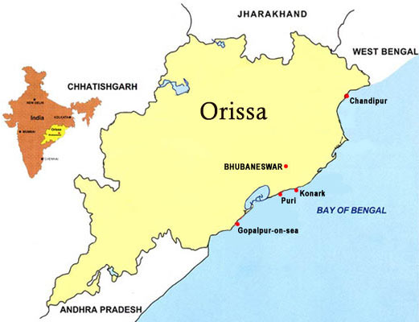

About Orissa:
Odisha is one of the 29 states of India, located in eastern India. It is surrounded by the states of West Bengal to the north-east, Jharkhand to the north, Chhattisgarh to the west and north-west, and Andhra Pradesh to the south. Odisha has 485 kilometres of coastline along the Bay of Bengal on its east, from Balasore to Ganjam. It is the 9th largest state by area, and the 11th largest by population. It is also the 3rd most populous state of India in terms of tribal population.The state of Odisha (Orissa) covers an area of 1,55,707 sq.km. having a coastline of about 480 km on the Bay of Bengal. It lies between 17° 31' and 22° 31' The Western Rolling Uplands are lower in elevation, 153-305 m and have a bedrock of hard soil and a lot of flora and fauna. 31' N latitude and 81° 31' and 87° 3°' E longitude. Bounded by West Bengal in the northeast, Jharkhand in the North, Andhra Pradesh in the South, Chattisgarh in the West, the State is open to the Bay of Bengal on the East.Orissa Population 2011.As per details from Census 2011, Orissa has population of 4.2 Crores, an increase from figure of 3.68 Crore in 2001 census. Total population of Orissa as per 2011 census is 41,974,218 of which male and female are 21,212,136 and 20,762,082 respectively.Density of this state 270/km2.